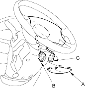
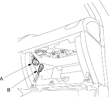
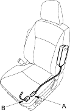

Deployment tool, 07HAZ-SG00500
Before scrapping any airbags, side airbags or seat belt tensioners (including those in a whole vehicle to be scrapped), the airbags, side airbags, seat belt tensioners must be deployed. If the vehicle is still within the warranty period, the Honda District Service Manager must give approval and/or special instruction before deploying the airbags, side airbags and seat belt tensioners. Only after the airbags, side airbags or seat belt tensioners have been deployed (as the result of vehicle collision, for example), can they be scrapped.
If the airbags, side airbags and seat belt tensioners appear intact (not deployed), treat them with extreme caution. Follow this procedure.
Deploying Airbags In the vehicle
If an SRS equipped vehicle is to be entirely scrapped, its airbags, side airbags and seat belt tensioners should be deployed while still in the vehicle. The airbags, side airbags and seat belt tensioners should not be considered as salvageable parts and should never be installed in another vehicle.
- Turn the ignition switch OFF, and disconnect the battery negative cable and wait at least 3 minutes.
- Confirm that each airbag, side airbag and seat belt tensioner is securely mounted.
- Confirm that the special tool is functioning properly by following the check procedure on the tool label.
Driver's Airbag:
- Remove the access panel (A), then disconnect the 2P connector between the driver's airbag (B) and the cable reel (C).

- Remove the glove box, then disconnect the 2P connector between the front passenger's airbag (A) and dashboard wire harness B (B).

Side Airbag:
- Disconnect the 2P connector between the side airbag (A) and the floor wire harness (B).
